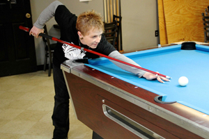

2013
December 13, 2013
The Case page is updated, with numerous reports from the Jackson County Sheriff's Department.
December 12, 2013
Byron appears on "The Intended Life" with host Samuel House. Their conversation ranges from the subject of Byron's book to creativity behind bars. Byron even does a reading of his essay "Hush."
November 21, 2013
Free Byron Case now has a presence on Instagram.
November 20, 2013
For his second appearance on the "John Talk Radio" podcast, Byron discusses the process of blogging without computer access and how The Pariah's Syntax: Notes from an Innocent Man came together.
September 17, 2013
Byron's first book, The Pariah's Syntax: Notes from an Innocent Man, is published. The 172-page paperback is a collection of personal essays and poems that Byron has written since his imprisonment, and 100% of the royalties from its sale benefit the FBC campaign. Click here to get your copy of this affecting, lyrical, even funny collection and support a good cause.
June 27, 2013
An afternoon in the park for Byron, for justice. Some hometown supporters spend a few hours of their Sunday at Kansas City's Mill Creek Park, displaying "FREE BYRON CASE" signs and talking about Byron's wrongful conviction with passersby. Watch the one-minute YouTube video here.
April 4, 2013
Nancy Petro (contributing editor to the "Wrongful Convictions Blog") and supporter Janette Mochnacz have a Twitter chat with the founder of defrostingcoldcases.com, addressing Byron's case
March 23, 2013

FBC holds the Break for Justice Pool Tournament and Fundraiser at Larry's Getaway in Blue Springs, Missouri. It's a fun afternoon of showing off pool-table skills, indulging in home-baked treats, testing luck in prize raffles, and, most importantly, increasing awareness of Byron's circumstances.
For their support in making Break For Justice happen, we thank the following people and local businesses:
- Larry's Getaway
- The Kansas City Royals
- Bella Napoli
- Soul Fire Tattoo
- redbatdesign
- Davy Rothbart, author
- Javier Gonzales, caricature artist
March 20, 2013
Traci Williams and Valarie Vogel appear on KKFI's "Wednesday Midday Medley." Thanks to Mark Manning, host of the show, for offering FBC the opportunity to speak to the greater Kansas City area about our cause!
March 14, 2013
KCXL radio's Darren Smith invites active FBC campaigners Traci Williams and Valarie Vogel onto his morning talk show, "Junk in My Trunk," to discuss Byron's case, the campaign, and our upcoming "Break for Justice" fundraiser.
February 9, 2013
Designed by renowed collage artist Winston Smith, "FREE BYRON CASE" T-shirts go on sale. Smith's surreal covers for music acts like the Dead Kennedys, Jello Biafra, and Ben Harper & Relentless Seven may be what he's best known for, but his work also exhibits in galleries internationally. He happens to be one of Byron's favorite contemporary artists so of course Byron was thrilled by Smith's generous donation of artwork to our cause.
February 5-7, 2013
Accepting an invitation to an event organized by Bill Windsor, for his Lawless America film project, Evelyn Case travels to Washington, D.C., where she delivers congressional testimony about Byron's wrongful conviction and experiences within the legal system. She and Byron's uncle, David Cummings, meet with U.S. Senator Claire McCaskill, of Missouri, to discuss the political aspects of FBC's work toward getting Byron pardoned by Governor Nixon.